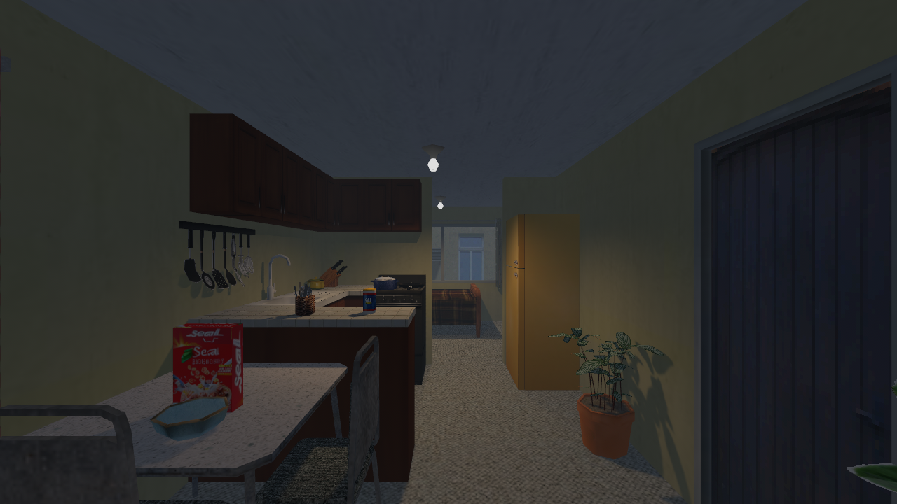
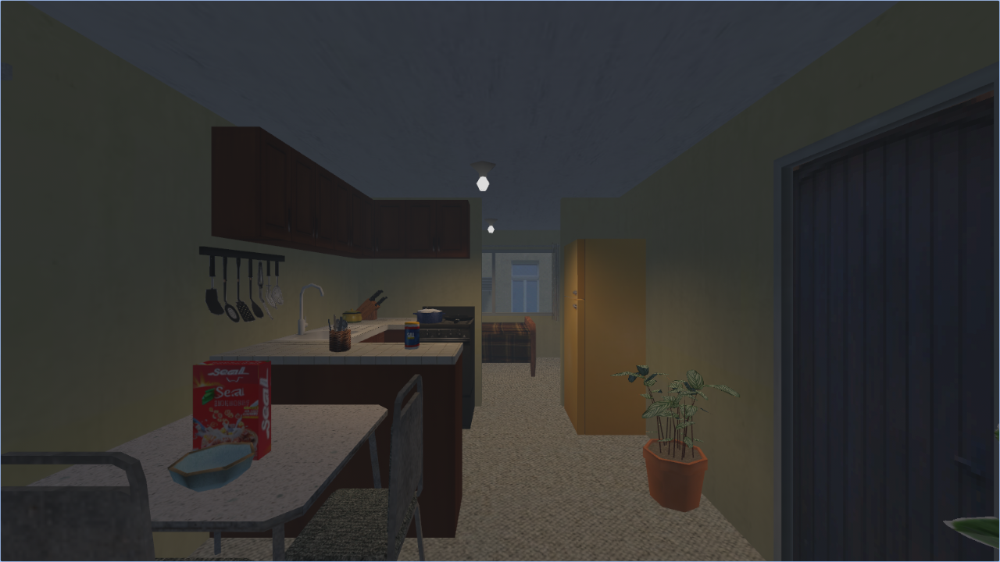
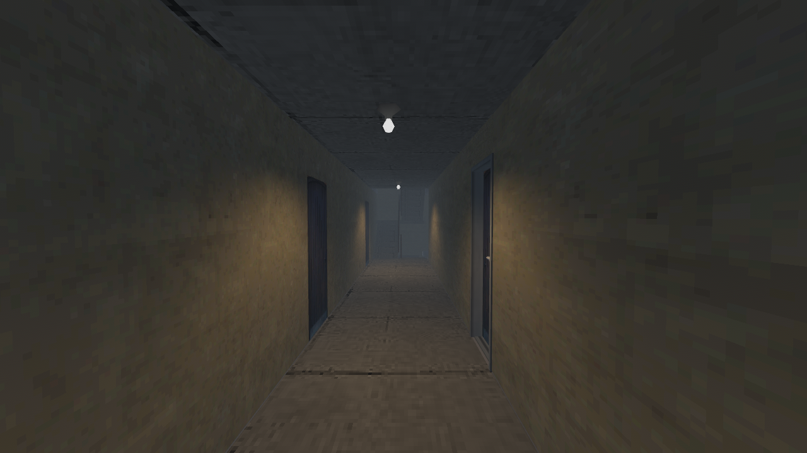
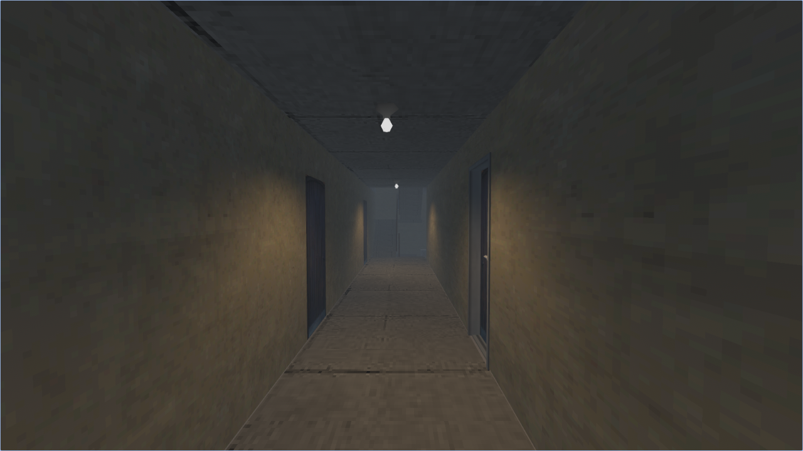
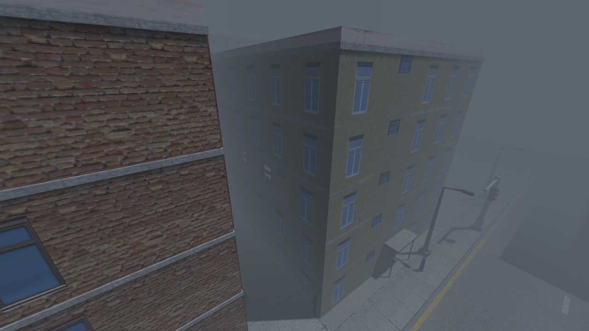
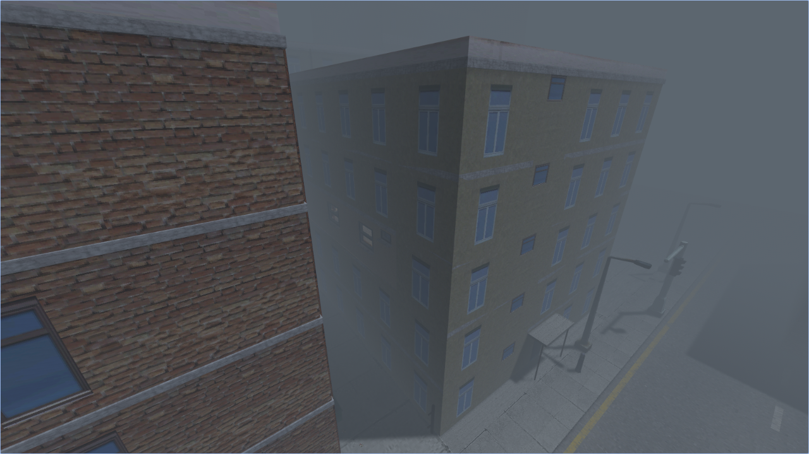

Matching review cameras at 1280 × 720 on Intel Iris Xe. Native: Vulkan. Browser: Chromium WebGL2. The apartment shows missing plant, utensil and furniture shadows in web. Corridor lighting and exterior fog are broadly similar; exterior shadow detail differs.
Bevy 0.19.1 defaults to four directional shadow cascades on native and one on WebGL2. Its WebGL2 renderer limits the shared directional/spotlight shadow texture to one layer; the shadowed sun leaves zero indoor spotlight shadow slots. Light colors, intensity and fog use the same application code.





